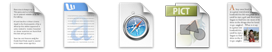
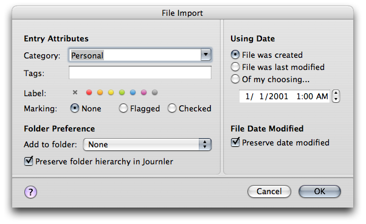

Importing
Importing
With Journler you can link to any file on your computer or on a network. Drag the file into the entry's text and Journler
creates a blue, clickable link. It's an easy way to maintain references to external media. But sometimes
it's better to turn a document into its own entry. Random notes, online thoughts you'd like to see
better organized or years of rich text entries that you had been storing in another journaling program.
Journler brings it all together.

Importing Text
Journler importing is a beast. Journler looks at the files you've provided, subdirectories and all, and imports any text, rich text or word document it is able to. Journler can import years of text entries, quickly adding them to your journal's search index and placing them in smart folders whose conditions they match.
Importing Images, Audio-Video and Other Media
Journler includes native support for a wide variety of file types, so rather than converting all of your media much of it is copied to your journal during an import. The media is preserved as an identical copy in its original format and associated with its own entry. PDFs, web archives, images, music and videos are among the document types that are stored this way.
Import Options
To begin an import, choose Import Files from the File Menu and select a single file, multiple files, or a directory.Journler presents you with the import options dialog. Decide what category and tags will apply to the new entries as well as the label and marking. Then choose how Journler will date the new items.
Finally, specify a folder to which the entries will be added. Autotagging is supported. If you choose to preserve the folder heierarchy, Journler will respect the folder hierarchy you have already established in the Finder for the folder you are importing.
Quick Import
Bypass the import dialog and quickly import files by dragging them onto Journler's dock icon. Import the contents of a folder by dragging it onto the Journler library at the left or any other regular folder. You may also quick import files by dragging them onto a folder or a date in the calendar.See media management for information about adding files to an entry you have already created.